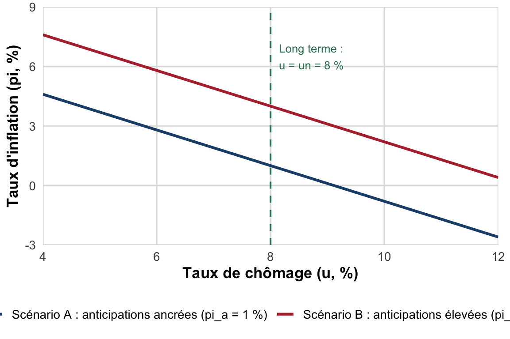

TD 6 : Keynes, Okun, Phillips
Demande effective, chômage involontaire, loi d’Okun et courbe de Phillips
Dossier de TD : critique keynésienne du marché du travail, calcul du coefficient d’Okun et lecture de la courbe de Phillips augmentée des anticipations (NAIRU).
Objectifs de la séance
À l’issue de cette séance, vous saurez :
- Distinguer le chômage involontaire (Keynes) du chômage volontaire (néoclassique) et expliquer le rôle de la demande effective dans les décisions d’embauche des entreprises.
- Expliquer pourquoi une baisse générale des salaires peut, chez Keynes, aggraver le chômage plutôt que le résorber.
- Énoncer la loi d’Okun (\(\Delta u = -\beta\,(g-\bar g)\)), calculer une variation du taux de chômage à partir d’un taux de croissance donné, et interpréter des coefficients d’Okun observés dans plusieurs pays.
- Lire et interpréter la courbe de Phillips de court terme et de long terme, définir le NAIRU et utiliser l’équation \(\pi = \pi^a - a\,(u-u^n)\).
ImportantRappel d’organisation
La correction du CC1 (évalué en séance 4) est traitée en séance, à l’oral, avec le sujet projeté. Elle ne figure pas dans ce dossier écrit : apportez vos copies annotées.
Pré-requis. CM 6 (critique keynésienne du marché du travail, demande effective, loi d’Okun) et CM 7 (courbe de Phillips, NAIRU, anticipations). Relisez si besoin cours/chap2.qmd, §II.2-4.
Exercice 1 : Définitions et QCM
a) Pour chacune des affirmations suivantes, dites si elle est vraie ou fausse et justifiez en une phrase.
- Pour Keynes, ce sont les entreprises qui décident du volume d’embauche en fonction du coût du travail anticipé.
- Le chômage involontaire désigne des individus qui refusent de travailler au salaire de marché.
- Une hausse des salaires nominaux peut, chez Keynes, soutenir l’emploi via la demande effective, contrairement à la prescription néoclassique.
- La loi d’Okun établit une relation de corrélation positive entre le taux de croissance du PIB et la variation du taux de chômage.
- Le NAIRU est le taux de chômage pour lequel l’inflation observée est strictement nulle.
- À long terme, la courbe de Phillips est verticale au niveau du taux de chômage naturel \(u^n\).
b) QCM : une seule bonne réponse par question.
- Selon Keynes, ce qui gouverne les décisions d’embauche des entreprises est :
- le salaire réel d’équilibre b) la demande effective anticipée sur le marché des biens c) le taux d’intérêt réel d) la productivité marginale du travail
- Le NAIRU correspond :
- au taux de chômage qui fait accélérer l’inflation b) au taux de chômage compatible avec une inflation stable c) à un taux de chômage strictement conjoncturel d) à la différence entre chômage observé et chômage structurel
- Selon la théorie des anticipations rationnelles :
- l’arbitrage inflation-chômage subsiste indéfiniment, même annoncé b) l’arbitrage disparaît même à court terme si la politique est anticipée c) les politiques monétaires expansives stimulent durablement l’emploi d) l’inflation anticipée est toujours inférieure à l’inflation observée
- Le coefficient d’Okun mesure :
- le niveau du taux de chômage naturel b) la sensibilité de la variation du chômage à un point de croissance supplémentaire c) l’écart entre chômage volontaire et involontaire d) la pente de la courbe de Phillips de long terme
AstuceIndice
Pour les questions 1 à 6, repartez du tableau « quatre ruptures avec l’analyse néoclassique » du CM 6 et de l’équation \(\pi = \pi^a - a(u-u^n)\) du CM 7 : le signe de chaque relation (positive/négative) est la clé de la plupart des pièges.
Exercice 2 : Lecture de données : le coefficient d’Okun selon les pays
Le tableau suivant reporte le coefficient d’Okun \(\beta\) estimé pour cinq pays, sur deux sous-périodes.
| Pays | 1961-1980 | 1981-2016 |
|---|---|---|
| États-Unis | 0,38 | 0,42 |
| France | 0,13 | 0,28 |
| Royaume-Uni | 0,12 | 0,37 |
| Allemagne | 0,20 | 0,20 |
| Japon | 0,02 | 0,07 |
Source : Blanchard et Cohen (2017), d’après CORE (2018).
Questions.
- Rappelez la signification économique du coefficient \(\beta\) dans la loi d’Okun \(\Delta u = -\beta\,(g-\bar g)\). Un \(\beta\) élevé traduit-il un chômage plus ou moins réactif aux fluctuations de la production ?
- Classez les cinq pays du plus réactif au moins réactif sur la période 1981-2016. Le classement change-t-il par rapport à 1961-1980 ?
- Le CM 6 avance que \(\beta\) dépend de la façon dont les entreprises ajustent l’emploi aux variations de production, elle-même liée à la législation sur l’embauche et le licenciement. Le cas du Japon (0,02 puis 0,07) illustre-t-il plutôt un marché du travail flexible ou protégé ? Justifiez.
- Le coefficient français passe de 0,13 à 0,28 entre les deux sous-périodes. Proposez une explication à cette hausse en mobilisant la notion de flexibilité du marché du travail (vous pouvez anticiper sur le modèle WS-PS vu en CM 8).
AvertissementErreur fréquente
Ne confondez pas le niveau du taux de chômage (structurel, conjoncturel) et sa sensibilité à la croissance (\(\beta\)) : un pays peut avoir un chômage structurel élevé (ex. France) tout en ayant un coefficient d’Okun modéré. Ce sont deux informations distinctes.
Exercice 3 : Exercice analytique : calcul et lecture de la courbe de Phillips
On étudie une économie caractérisée par un taux de chômage naturel \(u^n = 8\,\%\), un paramètre de sensibilité \(a = 0{,}9\), et deux scénarios d’inflation anticipée : \(\pi^a = 1\,\%\) (scénario A, anticipations ancrées) et \(\pi^a = 4\,\%\) (scénario B, anticipations plus élevées).
a) Calcul. À l’aide de l’équation de Phillips augmentée \(\pi = \pi^a - a\,(u-u^n)\), complétez le tableau suivant (arrondissez à \(0{,}1\) point) pour le scénario A :
| \(u\) (%) | 5 | 6 | 7 | 8 | 9 | 10 |
|---|---|---|---|---|---|---|
| \(\pi\) (%) |
b) Que vaut \(\pi\) lorsque \(u = u^n = 8\,\%\) ? Ce résultat est-il propre au scénario A, ou vaut-il aussi pour le scénario B ? Expliquez pourquoi.
c) Lecture du graphique. La figure ci-dessous représente les deux courbes de Phillips de court terme (scénarios A et B) et la droite verticale de long terme.
Questions sur la figure.
- Un gouvernement du scénario A souhaite ramener durablement le chômage à 6 %. D’après la figure, que doit-il accepter à court terme ? Que se passe-t-il ensuite si les agents révisent leurs anticipations à la hausse ?
- Représentez (mentalement ou sur brouillon) le passage du scénario A au scénario B sur le graphique : dans quel sens la courbe de court terme se déplace-t-elle ? Ce déplacement modifie-t-il la position de la droite de long terme ?
- En une phrase, expliquez pourquoi ce graphique illustre l’idée que « la politique monétaire n’a pas d’effet réel durable ».
AstuceIndice
Pour la question 5, repérez le point d’intersection entre \(u=6\,\%\) et la droite du scénario A avant de raisonner sur le déplacement de la courbe.
Exercice 4 : Question de réflexion
Rédigez une réponse structurée (15 à 20 lignes, avec une courte introduction et une conclusion) à la question suivante :
« Une entreprise qui réduit les salaires de ses employés augmente-t-elle nécessairement l’emploi ? »
Vous mobiliserez explicitement les notions de demande effective, de chômage involontaire et de loi d’Okun, et vous confronterez le raisonnement keynésien à la lecture néoclassique vue au TD 5.
NoteAttendu méthodologique
Une bonne copie : (i) pose le raisonnement néoclassique de départ (baisse du coût du travail \(\Rightarrow\) hausse de la demande de travail) ; (ii) expose la contre-argumentation keynésienne (salaire = revenu, effet sur la demande effective) ; (iii) conclut sur les conditions (partielles/générales, courte/longue période) sous lesquelles chaque lecture est pertinente.
Pour aller plus loin
AstuceRessources complémentaires
- Blanchard et Cohen (2017), Macroéconomie, chapitre sur la relation croissance-chômage : pour l’estimation détaillée des coefficients d’Okun par pays.
- Article : « La reprise sans emplois remet-elle en cause la loi d’Okun ? », blog Illusio : lecture courte sur les limites de la loi d’Okun après les récessions récentes.
- Vidéo : rechercher « courbe de Phillips expliquée » sur une chaîne d’économie grand public (Heu?reka, Osons Causer) pour une explication visuelle du passage court terme/long terme.
- Pour réviser le CC1 avant sa correction en séance : reprenez vos réponses aux trois sujets d’examen distribués en séance 4 et notez vos points de blocage.